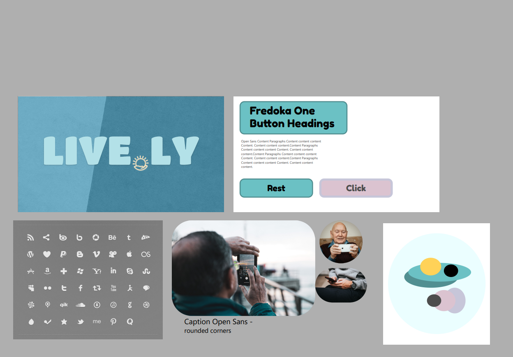
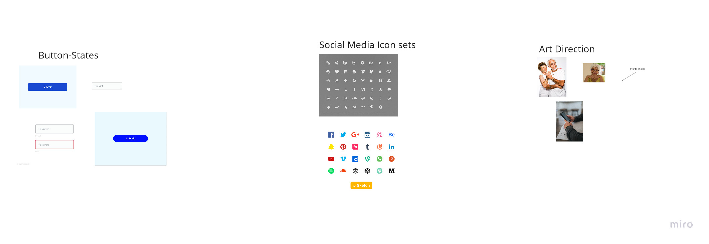
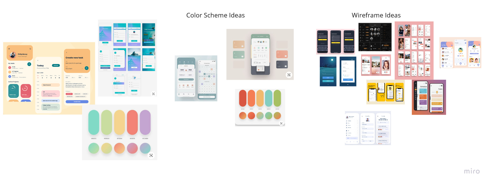
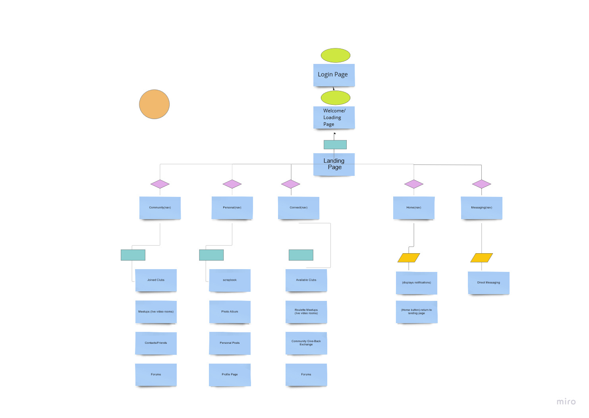

Live.ly is a mockup of an app that my classmates and I created for our UI/UX 2 class. We were posed with a challenge to solve and we chose loneliness among elderly folk.
Seniors today are facing increasing levels of loneliness, and the Covid-19 Pandemic has increased these circumstances, by decreasing the level of face-to-face contact seniors have with their families and peers.
Due to ageism, this is often overlooked. However loneliness contributes to a higher mortality rate (and a higher chance of developing deadly diseases) within the senior population.
Seniors look for apps that connect them with their friends and family the most. A challenge to this is privacy and safety for seniors, many of whom unassumingly fall victim to scams. We want seniors to stay safe and foster healthy connections, without having to worry about data leaks or their information being compromised. Our app will make it easy for them to control how much information they share with others through clear communication and design.



